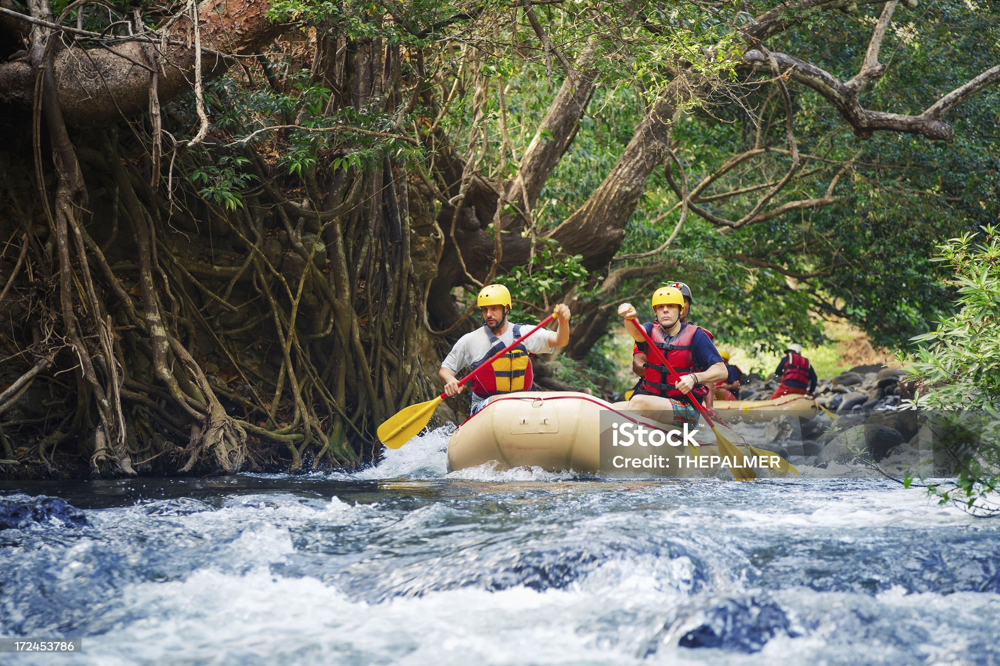

Biking during the summer in Michigan



Biking through Michigan in summer feels like freedom on two wheels, with warm breezes carrying the scent of pine and lake water. Trails wind past sparkling shores of Lake Michigan, offering both challenge and calm. Light, breathable clothing keeps riders cool while sunscreen and hydration are essential companions. Evenings bring golden sunsets that turn every ride into a memory worth keeping. Whether on city paths or forest trails, summer biking in Michigan blends adventure with pure relaxation.